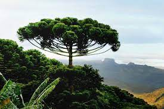

Vegetação e fauna
O ecossistema que compõe a região de Irati é a Floresta Ombrófila Mista, ou seja, que necessita nas fases iniciais de crescimento, de umidade e sombra. A composição vegetal do município divide-se nos estágios: inicial (capoeira, vassourinha, etc.); médio (capoeirão, florestas em formação); avançado (reflorestamento; agricultura, pastagem e outros, florestas formadas).
Flora
As principais espécies nativas são: Araucária; Imbuia; Erva-mate; Bracatinga; Cedro. Recente estudo apresentado no Centenário de Irati por Daniel Saueressig, pesquisador da área de Dendrologia, apontou a presença de 174 especies arbóreas autóctonas em Irati. As famílias Myrtaceae (30 espécies), Fabaceae (17), Lauraceae (15), Euphorbiaceae (10), Solanaceae (9), Asteraceae e Salicaceae (8), Aquifoliaceae e Sapindaceae (5) e Meliaceae (4), apresentaram uma maior riqueza florística e juntas representam 63,79% das espécies registradas. Segundo o mesmo autor, as espécies Calyptranthes grandifolia, Neomitranthes 17 | P á g i n a gemballae e Tetrorchidium rubrivenium apresentam baixa frequência e podem ser consideradas espécies raras na área do município.

Fauna
Quanto a fauna da Floresta Ombrófila Mista, podem ser encontrados roedores (ratos, cutias e pacas), aves ameaçadas de extinção como a gralha-azul e o papagaio- de-peito[1]roxo, além de inúmeros insetos. A semente da araucária, o pinhão, é muito apreciada pela fauna em geral e se constitui numa fonte de alimento essencial para o seu sustento.

Hidrografia
O município de Irati está localizado na Bacia hidrográfica do Rio Paraná, sendo que a rede de drenagem que banha o município divide-se em duas vergências. Para sudoeste, fazendo parte da bacia do Rio Iguaçu existem os rios Preto, Riozinho, Mato Queimado, Imbituvinha, Taquari, Guamirim, Corrente, Campinas, Cachoeira e Caçador, que terminam por desaguar no Rio Potinga, afluente da margem direita do Iguaçu. Com vergência para o norte e fazendo parte da bacia do Rio Ivaí, existem os rios Valeiros, Linha B, Guabiroba, dos Patos, dos Cochos, dos Antónios, do Couro, Canhadão, das Antas, da Prata, do Cobre, da Areia, Caratuva, Bonito e Barreiro. Entre os cursos d'água, destacam-se o rio dos Patos, Caratuva, das Antas, Preto e Riozinho.

Clima
Segundo a classificação climática de Köppen, o clima de Irati é temperado, apresentando verões amenos, invernos com ocorrências de geadas severas e frequentes, não apresentando estação seca, com uma amplitude térmica média e significativa. Segundo o Instituto Nacional de Meteorologia (INMET), desde 1966 a menor temperatura registrada em Irati (estação convencional) foi de -7,2 °C em 18 de julho de 1975, e a maior atingiu 34,6 °C em 11 de março de 2005. O município apresenta uma variação média, em que o mês mais chuvoso é janeiro, e o mês menos chuvoso, é agosto, sendo que o maior acumulado de precipitação em 24 horas foi de 175 mm em 8 de junho de 2014. (ANDRADE, A. R.; ROSEGHINI, W.F.F.; MENDONÇA, F. A;. 2010, p.66)
 Clique aqui para retornar
Clique aqui para retornar